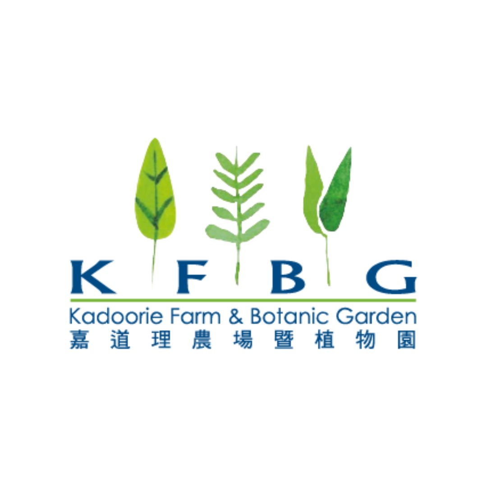

Journeys
旅程
Grounding Walk
連結大地
A−
A+
EN
繁中
01
Now playing
正在播放

KFBG Audio Journey
嘉道理農場暨植物園 語音旅程
Add to Home Screen for offline use
加至主畫面，離線收聽
✕
1
Tap the
Share ↑
icon at the bottom of Safari
點擊 Safari 底部的
分享 ↑
圖示
2
Scroll down and tap
"Add to Home Screen"
向下捲動，點選
「加至主畫面」
3
Tap
"Add"
— open anytime offline
點選
「加入」
，隨時離線開啟
Available in Safari only
僅適用於 Safari
📶 Download for offline use in the forest
📶 下載音頻，在森林中離線收聽
Download
下載
📶 Offline — playing from cache
📶 離線模式 — 從緩存播放
Play all 5 chapters in order
順序播放全部5個章節
Grounding Walk at Lower Hillside of KFBG
連結大地 — 嘉道理下山區靜心漫步
PLAYLIST
播放列表
0:00 / –:––